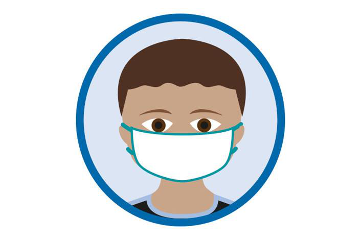

Ways of prevent COVID-19
-
Protect yourself and those around you:
- Get vaccinated as soon as it’s your turn and follow local guidance on vaccination.
- Keep physical distance of at least 1 metre from others, even if they don’t appear to be sick. Avoid crowds and close contact.
- Wear a properly fitted mask when physical distancing is not possible and in poorly ventilated settings.
- Clean your hands frequently with alcohol-based hand rub or soap and water.
- Cover your mouth and nose with a bent elbow or tissue when you cough or sneeze. Dispose of used tissues immediately and clean hands regularly.
- If you develop symptoms or test positive for COVID-19, self-isolate until you recover.
Wear a mask properly
Firstly, make sure your mask covers your nose, mouth and chin. Next, clean your hands before you put your mask on, before and after you take it off, and after you touch it at any time. When you take off your mask, store it in a clean plastic bag, and every day either wash it if it’s a fabric mask or dispose of it in a trash bin if it’s a medical mask. Remember, don’t use masks with valves.
Make your environment safer
The risks of getting COVID-19 are higher in crowded and inadequately ventilated spaces where infected people spend long periods of time together in close proximity. Outbreaks have been reported in places where people have gather, often in crowded indoor settings and where they talk loudly, shout, breathe heavily or sing such as restaurants, choir practices, fitness classes, nightclubs, offices and places of worship.
Keep good hygiene
To ensure good hygiene you should do thiese. First, regularly and thoroughly clean your hands with either an alcohol-based hand rub or soap and water. This eliminates germs that may be on your hands, including viruses. Next, cover your mouth and nose with your bent elbow or a tissue when you cough or sneeze. Dispose of the used tissue immediately into a closed bin and wash your hands. Finally, clean and disinfect surfaces frequently, especially those which are regularly touched, such as door handles, faucets and phone screens.
What to do if you feel unwell
-
If you feel unwell, here’s what to do.
- If you have a fever, cough and difficulty breathing, seek medical attention immediately. Call by telephone first and follow the directions of your local health authority.
- Know the full range of symptoms of COVID-19. The most common symptoms of COVID-19 are fever, dry cough, tiredness and loss of taste or smell. Less common symptoms include aches and pains, headache, sore throat, red or irritated eyes, diarrhoea, a skin rash or discolouration of fingers or toes.
- Stay home and self-isolate for 10 days from symptom onset, plus three days after symptoms cease. Call your health care provider or hotline for advice. Have someone bring you supplies. If you need to leave your house or have someone near you, wear a properly fitted mask to avoid infecting others.
- Keep up to date on the latest information from trusted sources, such as WHO or your local and national health authorities. Local and national authorities and public health units are best placed to advise on what people in your area should be doing to protect themselves.